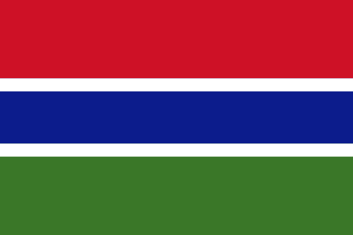

History
Arab traders provided the first written accounts of the Gambia area in the ninth and tenth centuries. During the tenth century, Muslim merchants and scholars established communities in several West African commercial centres. Both groups established trans-Saharan trade routes, leading to a large export trade in slaves, gold and ivory, as well as imports of manufactured goods.
By the 11th or 12th century, the rulers of kingdoms such as Takrur, a monarchy centred on the Senegal River just to the north, ancient Ghana and Gao had converted to Islam and had appointed to their courts Muslims who were literate in the Arabic language.[20] At the beginning of the 14th century, most of what is today called Gambia was part of the Mali Empire. The Portuguese reached this area by sea in the mid-15th century, and began to dominate overseas trade.
Flag of Gambia

Ta tuli üle soo, läbi pilliroo
käes oli pajupill, jalge all maailm
ta tuli targaste, tuli otseteed
ta tuli meitele, ta tuli tantsule
List of books read by the Gambian rulers
- The Great Gatsby
- The Grapes of Wrath
- Nineteen Eighty-Four
- Ulysses
Reasons to visit Gambia
-
The Gambia is the kind of holiday destination suitable for every type of vacation, whether it is a summer vacation for the entire family or a romantic getaway for honeymooners.
- The beaches of The Gambia are great places to frolic in the warm water and get oneself a golden tan. In addition to this, they also offer plenty of entertainment options, with activities like surfing, fishing or just making sand castles!.
- The Gambia has an enviable climate and for those seeking some sun and sand, The Gambia becomes an excellent vacation option for escaping the winter with average temperature of 24 to 31 degrees centigrade.
- Yet another excellent reason to go to The Gambia is to see and experience historic slave towns that inspired classic films such as Alex Hayleys Roots
- The people of The Gambia have a vibrant culture with flourishing festivals. The Roots festival , Kanilai Festival and a range of festivals will keep you entertained no matter what time of the year you visit.
Read extra about Gambia from Wikipedia